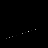
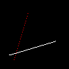

- 简单步进, 划分100，每次步进一点点，最后画条线

- 问题：低效，依赖于步进长度，如果线很长，步进长度短会出现大裂缝(采样不足)

#![allow(unused)]
fn main() {
void line(int x0, int y0, int x1, int y1, TGAImage &image, TGAColor color) {
for (float t=0.; t<1.; t+=.01) {
int x = x0 + (x1-x0)*t;
int y = y0 + (y1-y0)*t;
image.set(x, y, color);
}
}
}
- 步进长度其实很容易得到，这里用x的的步进作为实际步进长度，但是这有错误(erroneous)
- 计算当前步进比例
t
y = y0 + (y1 - y0) * t- 问题：一条线正常，另一条有洞，没有第三条线
- 第一条和第三条，是相同两条线，只是颜色不同，方向不同，目前处理不了

#![allow(unused)]
fn main() {
void line(int x0, int y0, int x1, int y1, TGAImage &image, TGAColor color) {
for (int x=x0; x<=x1; x++) {
float t = (x-x0)/(float)(x1-x0);
int y = y0*(1.-t) + y1*t;
image.set(x, y, color);
}
}
line(13, 20, 80, 40, image, white);
line(20, 13, 40, 80, image, red);
line(80, 40, 13, 20, image, red);
}
- 上面红线有洞是因为，纵向y比横向x大，导致采样不足，需要哪个大用哪个作为步进长度，这里的操作是如果steep，交换x和y，
- 然后保证前后两点前面的x比后面的小，就是大了就交换一下
- 问题：到这里为止已经基本能保证画线的需求，但是效率不高

#![allow(unused)]
fn main() {
void line(int x0, int y0, int x1, int y1, TGAImage &image, TGAColor color) {
bool steep = false;
if (std::abs(x0-x1)<std::abs(y0-y1)) { // if the line is steep, we transpose the image
std::swap(x0, y0);
std::swap(x1, y1);
steep = true;
}
if (x0>x1) { // make it left−to−right
std::swap(x0, x1);
std::swap(y0, y1);
}
for (int x=x0; x<=x1; x++) {
float t = (x-x0)/(float)(x1-x0);
int y = y0*(1.-t) + y1*t;
if (steep) {
image.set(y, x, color); // if transposed, de−transpose
} else {
image.set(x, y, color);
}
}
}
}
- 由于使用bevy实现上面的图像，导致这里的benchmark没法做
- 只做了阅读理解
- 目前代码有太多的
除法
- 没有做assets和check on going beyond the borders，就是需要
错误处理和边界判断
- 优化很危险，应该清楚理解代码会运行的平台。是在优化
graphics card或者just for CPU，这两者完全不同。
- 代码需要
profiled
- 经过测试，
10%在copy color，70%在调用上面的画线程序，这里就是需要优化的部分
- 每一次除法，都有相同的除数
(x1 - x0)，拿到外边
- 设立一个error variable，告诉我the distance to the best straight line from out current (x,y) pixel,we increase (or decrease) y by one, and decrease the error by one as well。
- 个人理解，首先for循环是
步进dx的长度，所以derror是dy / dx，也就是对于每次前进一次x，应该前进多少y,而这里y是int形，所有只有在error > .5的时候，y需要增加步进长度，这里为啥就不太清楚了，有点像是四舍五入，或者是某种数值计算优化，然后error会自己减掉一次步进长度因为这个步进长度已经被y使用了
- 由于没有
除法，line的效率和set Image 的效率差不多了
#![allow(unused)]
fn main() {
void line(int x0, int y0, int x1, int y1, TGAImage &image, TGAColor color) {
bool steep = false;
if (std::abs(x0-x1)<std::abs(y0-y1)) {
std::swap(x0, y0);
std::swap(x1, y1);
steep = true;
}
if (x0>x1) {
std::swap(x0, x1);
std::swap(y0, y1);
}
int dx = x1-x0;
int dy = y1-y0;
float derror = std::abs(dy/float(dx));
float error = 0;
int y = y0;
for (int x=x0; x<=x1; x++) {
if (steep) {
image.set(y, x, color);
} else {
image.set(x, y, color);
}
error += derror;
if (error>.5) {
y += (y1>y0?1:-1);
error -= 1.;
}
}
}
}
- 这里
消除float的使用，添加了一个derror2，然后思路和上面其实差不多，就是整体*2dx
- 这样之后
set_image操作的时长已经超过了line操作
#![allow(unused)]
fn main() {
void line(int x0, int y0, int x1, int y1, TGAImage &image, TGAColor color) {
bool steep = false;
if (std::abs(x0-x1)<std::abs(y0-y1)) {
std::swap(x0, y0);
std::swap(x1, y1);
steep = true;
}
if (x0>x1) {
std::swap(x0, x1);
std::swap(y0, y1);
}
int dx = x1-x0;
int dy = y1-y0;
int derror2 = std::abs(dy)*2;
int error2 = 0;
int y = y0;
for (int x=x0; x<=x1; x++) {
if (steep) {
image.set(y, x, color);
} else {
image.set(x, y, color);
}
error2 += derror2;
if (error2 > dx) {
y += (y1>y0?1:-1);
error2 -= dx*2;
}
}
}
}
- 一些额外的优化
- 比如其中将
对于steep的判断，移到了for的外面，进一步降低了时间
- 并提到将
y1>y0? 1:-1也转移到for外面，也能降低时间
- 又提到现在的
编译器会做相关的优化，因而这几步操作：虽然值得有相关的意识，但现在已经没有那么必要，毕竟会降低代码的可读性和复用性
- 这里需要下载他提供的
obj文件
- 用bevy直接读入，并
parse v和f，f是取所有的三大块里的第一小块重新组合，得注意读题...
- 然后用line画出来
- 使用
bevy遇到的问题:
- bevy的image的
起点在左上角，这里在左下角，画图的时候需要特殊处理
obj文件里会同时出现0点和800点，也就是当我设置图片大小是800的时候，obj文件里的800会out of index，需要特殊处理